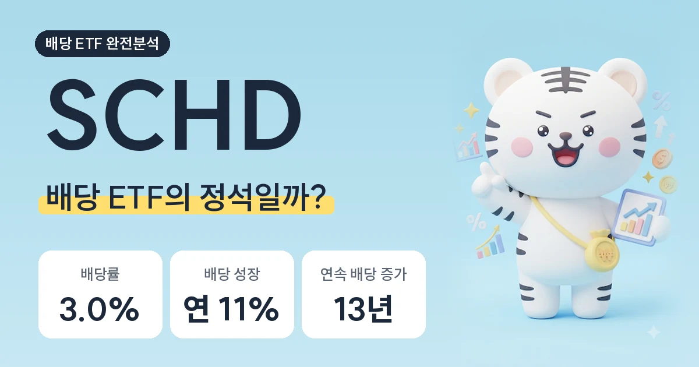
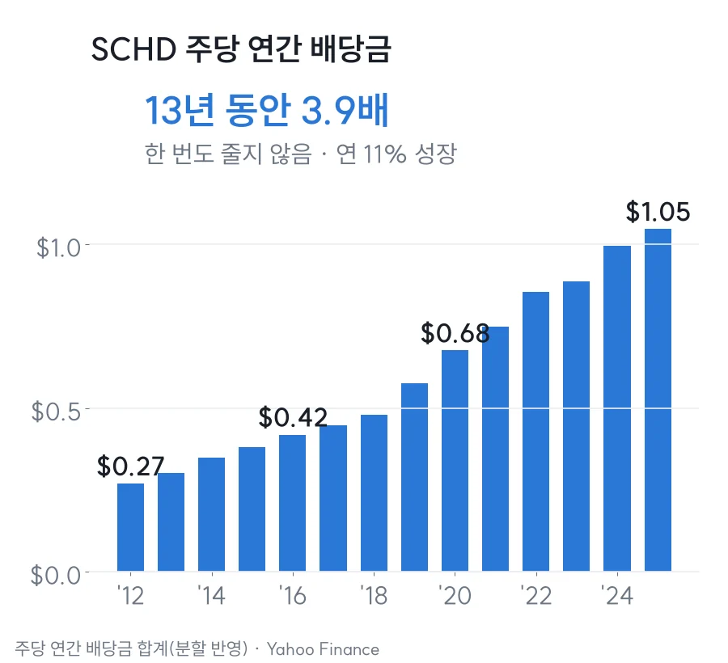
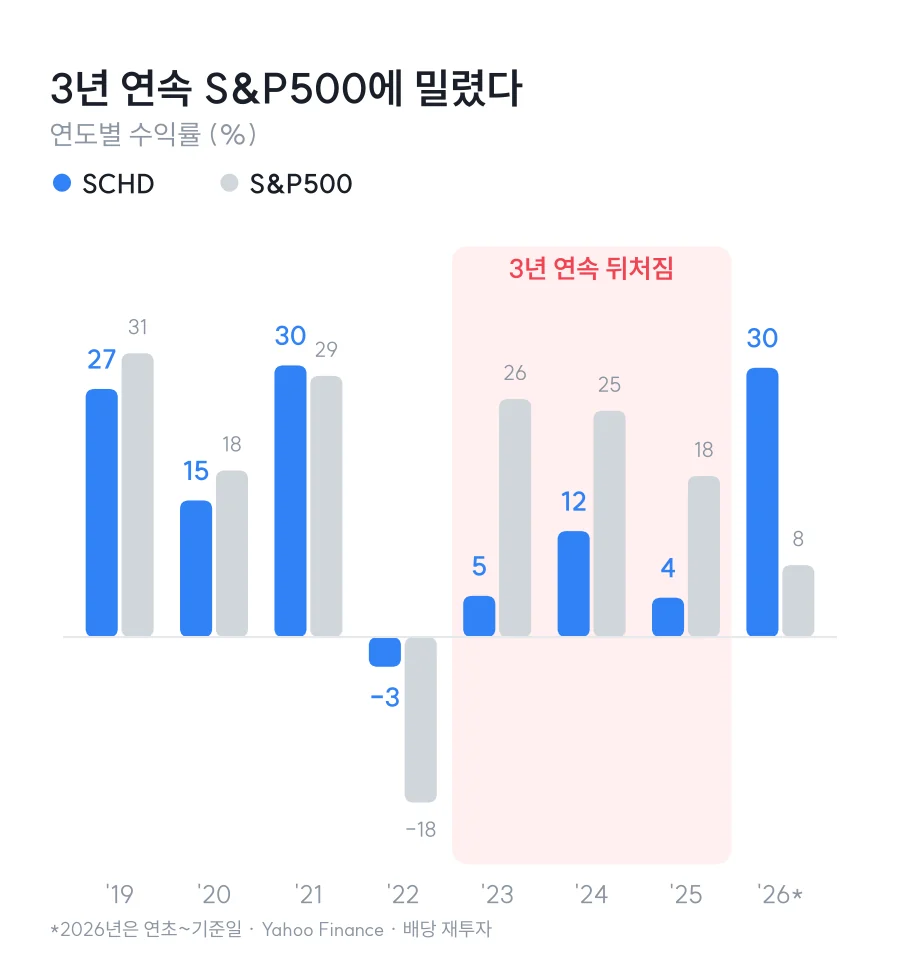
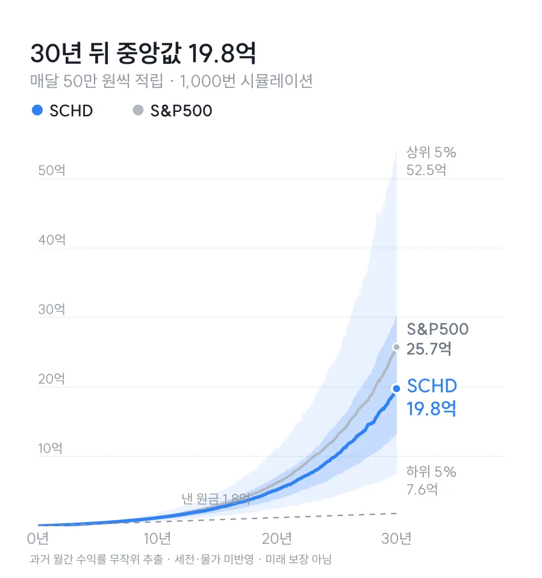
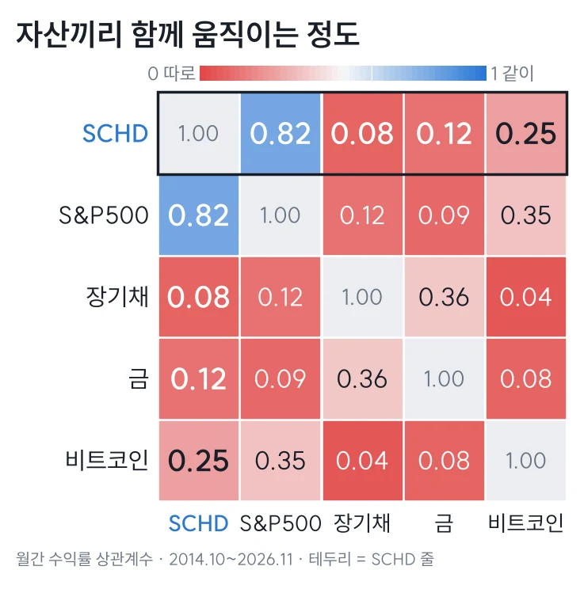
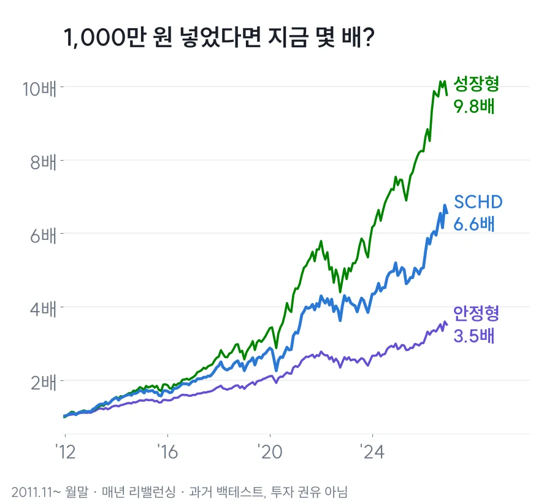
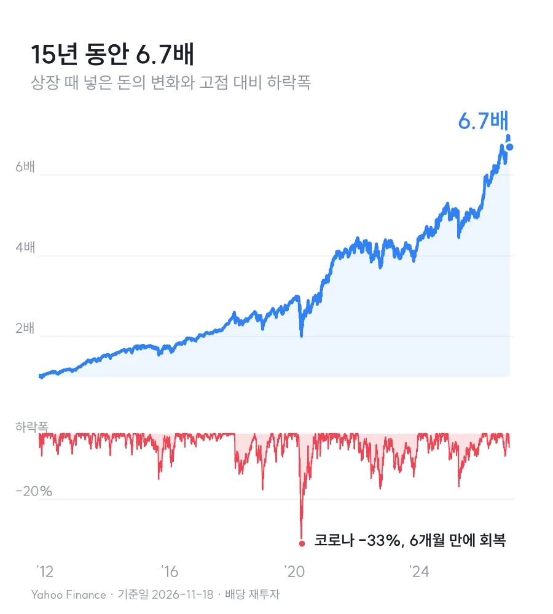
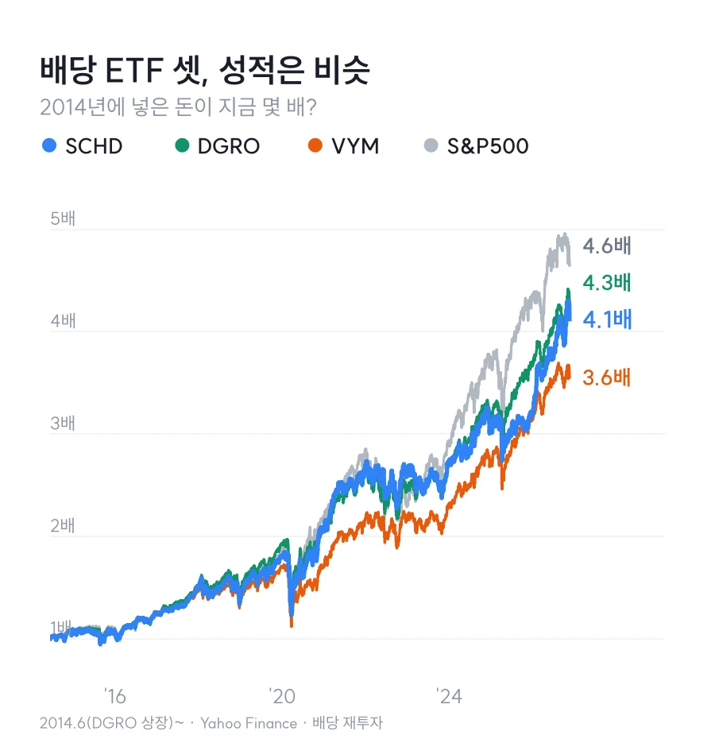
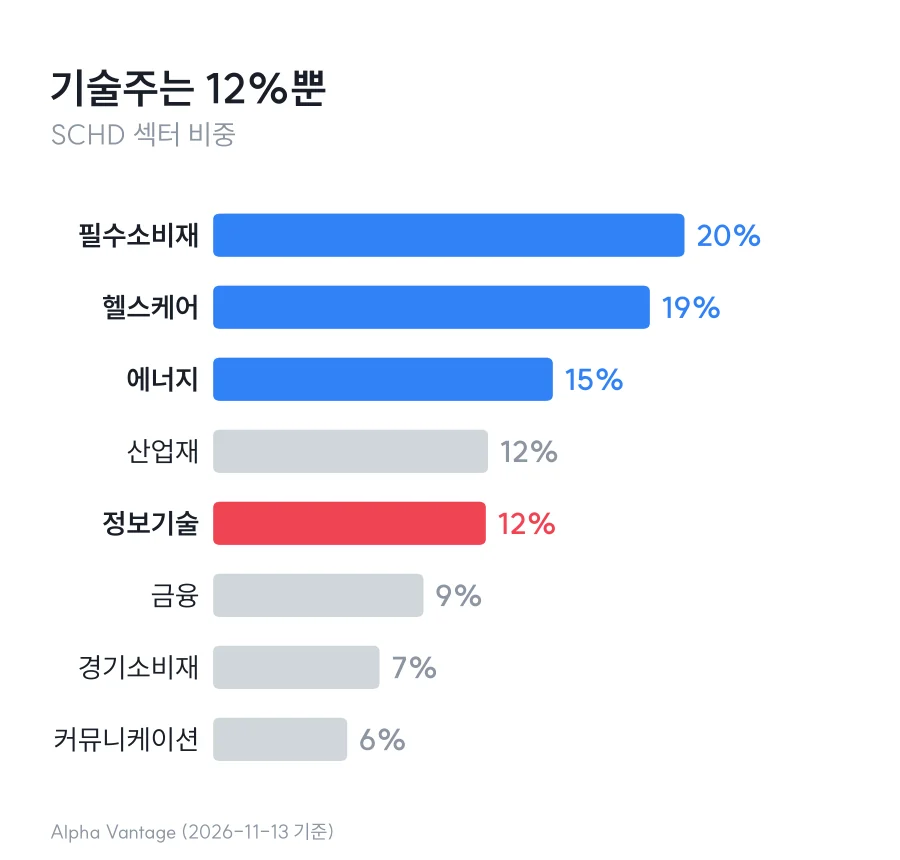

백호 머니
백호 머니SCHD 배당률·배당금·단점 총정리 (2026)
적립식 30년 투자하면 얼마?

회색 숫자는 미국 대표 지수 S&P500의 같은 기간 값이에요. 잘한 건지 비교하는 기준으로 보시면 돼요.
SCHD는 배당 ETF 하면 가장 먼저 나오는 이름이에요.
저도 아직 사지 않았고, 사기 전에 15년 치 데이터를 직접 계산해 봤어요. 좋은 점보다 단점을 먼저 알고 싶었거든요.
- 배당률 3.0%로 S&P500의 3배, 배당은 13년 연속 증가
- 대신 총수익은 S&P500보다 연 1.2%p 낮고, 최근 3년 연속 뒤처짐
- 매달 50만 원씩 30년이면 중앙값 19.8억, 낸 돈의 약 11배
SCHD 배당금과 배당일
배당은 S&P500의 3배, 13년 동안 한 번도 줄지 않았어요.
최근 1년 동안 주당 약 1.06달러, 배당률로 약 3.0%를 받았어요. S&P500(1.0%)의 3배예요.
배당락일은 보통 3·6·9·12월 하순이고, 지급은 며칠 뒤예요.
| 배당락일 | 주당 배당금 |
|---|---|
| 2025.12.10 | $0.278 |
| 2026.03.25 | $0.257 |
| 2026.06.24 | $0.253 |
| 2026.09.23 | $0.267 |

주당 배당금은 $0.27에서 $1.05로 13년 동안 한 번도 줄지 않고 3.9배가 됐어요. 같은 기간 S&P500의 배당은 2.4배 늘었어요.
오래 들고 있을수록 산 가격 대비 배당률이 올라가요. 제가 SCHD에서 가장 끌린 부분이에요.
SCHD 단점: 3년 연속 S&P500에 밀렸다
기술주가 적어서 2023~2025년 상승장을 거의 못 탔어요.

2023년에 S&P500이 26% 오를 때 SCHD는 4.5%에 그쳤어요. 기술주가 12%뿐이라 AI 상승장을 거의 못 탔기 때문이에요.
반대로 2022년 하락장에선 -3%로 버텼고(S&P500 -18%), 2026년엔 30%로 다시 앞서고 있어요.
- 성장장에서는 S&P500보다 덜 오른다
- 분기 배당이라 매달 현금흐름엔 아쉽다
- 환율과 배당세 15%를 같이 신경 써야 한다
SCHD 적립식 30년 투자하면 얼마?
매달 50만 원이면 중앙값 19.8억, 다만 S&P500보다는 적었어요.

분석 방법 · 몬테카를로 시뮬레이션SCHD의 과거 월간 수익률 180여 개를 무작위로 다시 뽑아 30년(360개월)을 이어 붙이는 걸 1,000번 반복했어요. 미래를 한 줄로 맞히는 대신 좋은 경우부터 나쁜 경우까지 범위를 보여 줘요.
| 30년 뒤 (낸 원금 1.8억) | 평가액 |
|---|---|
| 하위 5% (운이 나쁠 때) | 7.6억 |
| 중앙값 | 19.8억 |
| 상위 5% (운이 좋을 때) | 52.5억 |
가운데 결과가 19.8억으로 낸 돈의 약 11배예요. 같은 방식으로 S&P500을 돌리면 25.7억이라, 자산을 불리는 것만 보면 S&P500이 더 컸어요.
그리고 30년 사이 한 번은 25~40% 하락을 겪는다고 보는 게 맞아요.
지난 15년이 특히 좋았던 기간이라 낙관적인 숫자예요. 연 8%로 보수적으로 잡으면 약 7.5억이에요. 세금·물가는 빠져 있어요.
SCHD에 무엇을 섞을까?
S&P500과는 함께 움직이니, 분산하려면 채권·금을 섞어야 해요.

분석 방법 · 상관계수두 자산이 같은 달에 같은 방향으로 움직였는지를 숫자로 나타냈어요. 1에 가까울수록(파랑) 함께 오르내리고, 0에 가까울수록(빨강) 서로 따로 움직여요. 색칠된 줄이 SCHD 기준이에요. 2014년부터 146개월 데이터로 계산했어요.
- S&P500 0.82
거의 함께 움직여요. 미국 주식이 빠지면 SCHD도 같이 빠져요. - 비트코인 0.25
약하게만 연결돼요. 섞어도 흔들림을 줄여 주진 않아요. - 금 0.12
거의 따로 움직여요. 주식이 빠질 때 버팀목이 될 수 있어요. - 장기채 0.08
가장 따로 움직여요. 섞으면 전체 흔들림이 가장 많이 줄어요.
배당 ETF라고 하락장 방패는 아니에요.

분석 방법 · 백테스트2011년 11월에 1,000만 원을 넣고, 매년 말 원래 비율로 다시 맞췄다고 가정해 과거 데이터로 계산했어요.
| 예시 조합 (2011.11~) | 연평균 | 최대 낙폭 |
|---|---|---|
| 안정형 SCHD 60 + 채권 40 | 8.7% | -15.7% |
| SCHD 단독 | 13.3% | -21.5% |
| 성장형 SCHD 50 + QQQ 50 | 16.3% | -24.1% |
저는 성장형이 가장 눈에 들어왔어요. 연평균 16.3%로 S&P500(14.3%)보다도 높았고, SCHD가 약했던 해를 QQQ가 메워 줬거든요.
SCHD 연평균 수익률과 최대 낙폭
15년 동안 6.7배, 연평균 13.4%로 S&P500보다 조금 낮았어요.

읽는 법위는 상장 때 넣은 돈이 몇 배가 됐는지, 아래는 직전 최고점보다 얼마나 떨어졌는지(최대 낙폭)를 보여 줘요.
| 상장 이후 연평균 | 13.4% |
| 최근 10년 연평균 | 13.1% |
| 원화 환산 연평균 | 14.7% |
| 최대 낙폭 | -33.4% (6개월 만에 회복) |
상장 때 넣은 1,000만 원은 지금 약 6,700만 원이에요. S&P500이었다면 약 7,800만 원이에요. 대신 SCHD는 그중 더 많은 부분을 배당으로 받았어요.
SCHD vs DGRO·VYM 비교
세 배당 ETF 중 배당률은 가장 높고, 수익률은 비슷했어요.

| 2014.6~ | 연평균 | 배당률 | 최대 낙폭 |
|---|---|---|---|
| SCHD | 12.1% | 3.0% | -33.4% |
| DGRO | 12.4% | 1.9% | -35.1% |
| VYM | 10.7% | 2.3% | -35.2% |
수익률은 비슷하지만 SCHD가 배당률이 가장 높고 덜 빠졌어요. 배당보다 성장을 원하면 DGRO, 더 넓게 나누고 싶으면 VYM이 대안이에요.
연금저축·ISA로 같은 지수에 투자하는 방법은 「SCHD vs TIGER 미국배당다우존스」 글에서 따로 정리할게요.
SCHD 기본 정보와 구성 종목
다우존스 미국 배당 100 지수를 따르는 총보수 0.06% ETF예요.
| 운용사 · 상장일 | 찰스 슈왑 · 2011.10.20 |
| 추종 지수 | 다우존스 미국 배당 100 |
| 총보수 | 연 0.06% |
| 종목 수 | 약 100개 |

상위 종목은 텍사스 인스트루먼트(4.8%), P&G(4.3%), 코카콜라(4.2%) 순이에요. 한 종목이 5%를 넘지 않게 고르게 나눠 담겨 있어요.
정리
잘 맞는 분 · 배당이 늘어나는 걸 보며 오래 모을 분, 성장주 계좌에 안정감을 더하고 싶은 분
아쉬운 분 · 기술주 상승을 다 따라가고 싶은 분, 매달 현금흐름이 필요한 분
저는 "SCHD 하나로 끝"보다 성장주 옆에 두는 분산용이 맞다고 봤어요.
자주 묻는 질문
질문 고른 방법조회수가 높은 SCHD 유튜브 영상 4개(누적 약 490만 회)의 댓글 400여 개를 모아, 공감과 답글이 많이 달린 궁금증을 골랐어요. 답은 백호가 데이터로 해 줄게요.
하락장이나 횡보장에 적립식으로 시작해도 괜찮나요?
그냥 S&P500을 사는 게 낫지 않나요?
월 배당 100만 원 받으려면 얼마가 필요한가요?
배당 성장(연 11%)이 앞으로도 계속될까요?
TIGER·SOL·ACE 미국배당다우존스와 뭐가 달라요?
지금 사도 늦지 않았나요? 고점 아닌가요?
배당금 세금이랑 건강보험료는 어떻게 되나요?
증권사 앱에 뜨는 '매도 시 10% 원천징수'는 원유 같은 PTP 종목 얘기라 SCHD와는 상관없어요.
다음에 읽을 글
- SCHD vs TIGER 미국배당다우존스연금저축·ISA로 SCHD에 투자하는 법 · 곧 공개
- SCHD vs DGRO, 배당 성장 ETF 비교곧 공개
- 몬테카를로 시뮬레이션 읽는 법이 블로그 숫자를 읽는 방법 · 곧 공개
5년 넘게 주식·ETF에 투자해 온 직장인. ETF를 직접 계산한 데이터로 소개합니다.
출처: Schwab Asset Management, Yahoo Finance, Alpha Vantage(구성 종목 2026.11.13 기준). 수익률은 배당 재투자 기준으로 직접 계산했어요.
이 글은 정보 제공 목적이며 투자 권유가 아닙니다. 과거 수익률과 시뮬레이션은 미래를 보장하지 않습니다. 면책 고지